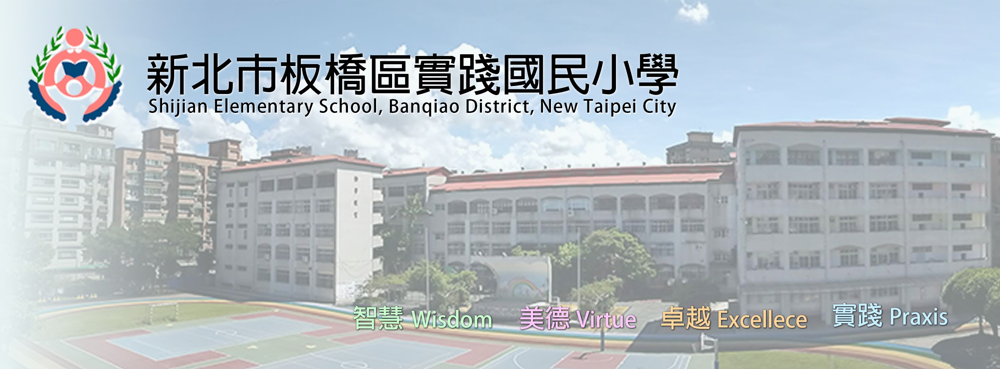

學歷
我目前的學歷是高職畢業,正在上大學
而我從國小開始算的話,上過的學校有:實踐國小⮕忠孝國中⮕鶯歌高職⮕亞東科技大學
另外由於我還在上大學中,因此不會提到大學!
/*-----------------------------------------------------------------------------------------------------------------------------------------------------------------------------------*/
從國小開始介紹吧!

國小有6年的時間,因此國小搞笑的事相對於其他的多蠻多的!
我還記的小一還小二時跳的舞有多好笑,已經成為我國小的黑歷史了,還有三四年級的老師有養貓會帶貓來學校,可以去摸她,雖然有時候會被咬但挺印象深刻的,畢竟這是我人生第一次摸到活生生的貓,也是在三四年級我第一次接觸到班服的概念,五六年級倒是沒有多少印象深刻的回憶,頂多就是樓層很高要一直爬樓梯,以及我下課常去圖書館看書,還有就是我讀的國小有個很特別的東西,它的跑道是彩色的!
/*-----------------------------------------------------------------------------------------------------------------------------------------------------------------------------------*/
接下來是國中介紹!
相較於國小國中只有三年,因此搞笑的事比較少,但還是有一定數量的!
國中三年在前兩年我都沒多少印象,但在國三要會考了!相較於國小在會考的制度下真的挺痛苦的,不過在會考後時間就很開心了!印象比較深刻的是在某一節體育課在操場上遇到一隻雞,真的挺有趣,而且國中同學直到現在都還有在聯絡,像是去漫展或看電影
/*-----------------------------------------------------------------------------------------------------------------------------------------------------------------------------------*/
接下來是高職介紹!
高職一樣有三年,因此有趣的事相較於國小少!
在高職我選的專業是陶瓷工程科,因此整個高職生涯都是圍繞著陶土進行的,印象中就有吃土的往身上塗泥漿的,高職一樣有一個重量級的考試,不過要看有些人只考統測但有的人會考學測,在考完學後就要做畢業品,刮痧板,還有專業客的大陶瓷作品
陶瓷展: